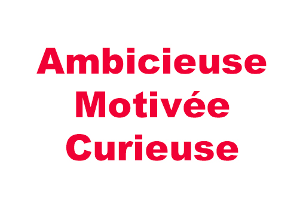
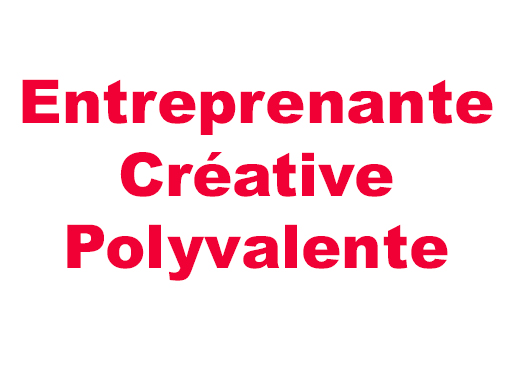

Je m'apelle Elodie, j'ai 19 ans et je suis actuellement en 1ère année de DUT MMI à l'IUT de Tarbes. Après l'obtention de mon baccalauréat économique et social, j'ai décidé de m'orienter vers une formation pluridisciplinaire pour développer mon profil polyvalent dans le domaine du multimédia et d'internet. Vous trouverez dans la rubrique
"Ma formation" le détail des matières que j'étudie.